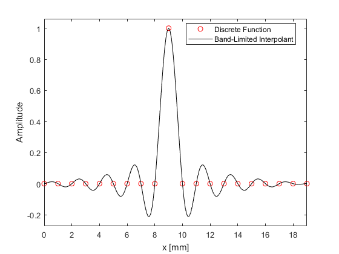

getBLI
Compute underlying Fourier band-limited interpolant (BLI).
Syntax
BLI = getBLI(func)
BLI = getBLI(func, dx)
BLI = getBLI(func, dx, sampling_factor)
BLI = getBLI(func, dx, sampling_factor, plot_BLI)
BLI = getBLI(func, [], [], plot_BLI)
[x_fine, BLI] = getBLI(func, dx, sampling_factor, plot_BLI)
...
Description
getBLI computes the underlying band-limited interpolant (BLI) of a discretely sampled 1D function assuming a Fourier basis. The example below shows the BLI of a discrete spatial delta function.
delta = zeros(20, 1);
delta(end/2) = 1;
getBLI(delta, 0.001, 10, true);

Inputs
Optional Inputs
dx |
spatial sampling [m] (default = 1) |
upsampling_factor |
spatial sampling used to sample the underlying BLI (default = 20) |
plot_BLI |
Boolean controlling whether the discrete input function and its BLI are displayed (default = false) |
Outputs
BLI |
band-limited interpolant |
x_fine |
x-grid for BLI |
See Also
getDeltaBLI,
spect